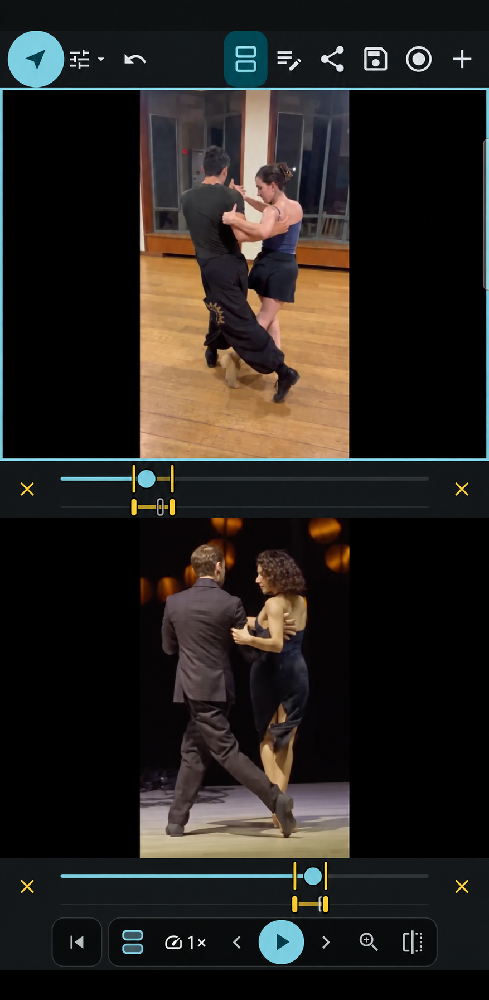
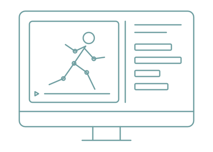

During the lesson
Start with the movement
you want to work on.
Record a short clip or open an existing video. Slow it down and loop the part you want to discuss with your student.
A shared reference for the movement you mean.
FOR DANCE, MOVEMENT, AND SPORT TRAINING
Capture the movement. Highlight the details. Give students clear feedback they can put into practice.
How it works
Connect technical observations with clear visual feedback, so students know what to focus on in training.
Example: video feedback from a group dance lesson
During the lesson
Record a short clip or open an existing video. Slow it down and loop the part you want to discuss with your student.
A shared reference for the movement you mean.

Between lessons
Draw on the clip, add notes or record yourself talking through it. Share a video explanation your student can revisit when they practise.
The moment, the explanation and the cue together.

Compare technique
Compare a coach’s demonstration with a student’s movement, or review two clips of the same student. Look at the differences and decide what to focus on.
A clear reference for technique and feedback.


In person or from a distance
Examine a demonstration, isolate a technical detail and compare movements together. Give students a clear reference for focused training.
Bring video review to the park, field or climbing area. Open and analyse local clips offline, wherever the session takes you.
Record an explanation and share the exported video through your usual channels. Students can watch it without installing INFORM.
For your business
Coach with the app. Explore a customised integration for your platform.
For teachers, coaches and studios
From one-to-one coaching to a class of 20, give students detailed video feedback and a clear technical reference to carry into training.
For platform teams
Bring detailed video review and feedback into your coaching, training or performance platform. Explore a customised INFORM integration for your users and brand.
See INFORM in practice
See the current app in a coaching demo, or discuss a customised integration for your platform. Tell us what you want to achieve.

Desktop Version In development
Being a choreographer and movement teacher, I had to find in a bunch of other apps the tools that are all conveniently present here. Can't recommend it more!
For years I've been looking for a replacement for the defunct Coach's Eye. INFORM is a beautiful answer. The controls layout is clean and intuitive.
INFORM is for coaches, instructors and dedicated practitioners working to refine technique and develop performance—in dance, movement training and sport. Use it for individual analysis, lessons or group coaching. Platform teams can contact us about customised integration.
Your videos, drawings and notes are currently stored on your device. Cloud storage is on our roadmap, but isn’t available yet. We’ll explain how it works and how your information is handled before it launches.
No account is needed right now. We plan to introduce accounts and sign-in as INFORM develops.
No. Clients can watch your exported video feedback without installing INFORM. Cloud-based sharing is on our roadmap; for now, send exported videos using your phone’s sharing options.
Contact us to discuss your dashboard, the video-analysis tools your users need and your customisation requirements. We’ll explore the scope, approach and commercial terms for your project.
INFORM works on Android phones and iPhones. The current requirements are Android 7.0 or newer and iOS 15 or newer.
See INFORM in action
See how INFORM can support your coaching, or explore a customised integration for your platform.